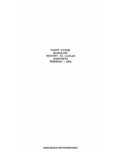

F2Gyotening mashhur 'Faust' tragediyasining falsafiy mazmunga boy ikkinchi qismi.
Ushbu asar nemis adibi Iogann Volfgang fon Gyotening mashhur 'Faust' tragediyasining ikkinchi qismidir. Asarda inson ruhiyati, bilimga intilish va hayotning mazmuni falsafiy va badiiy shaklda yoritilgan.